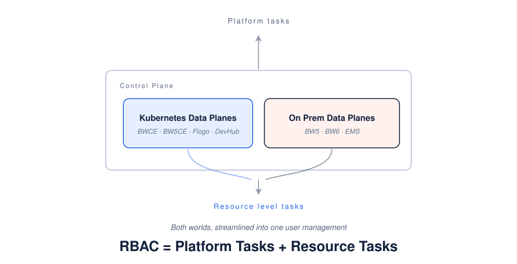
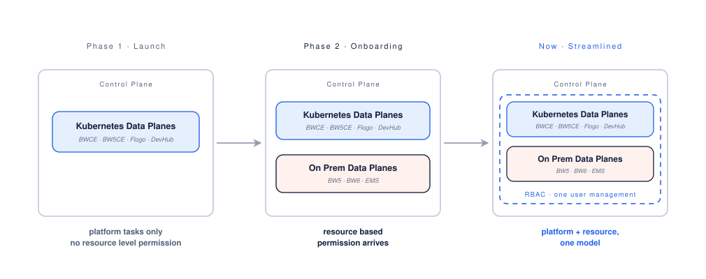
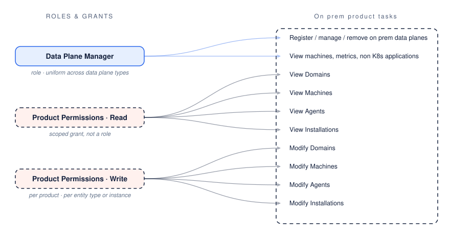
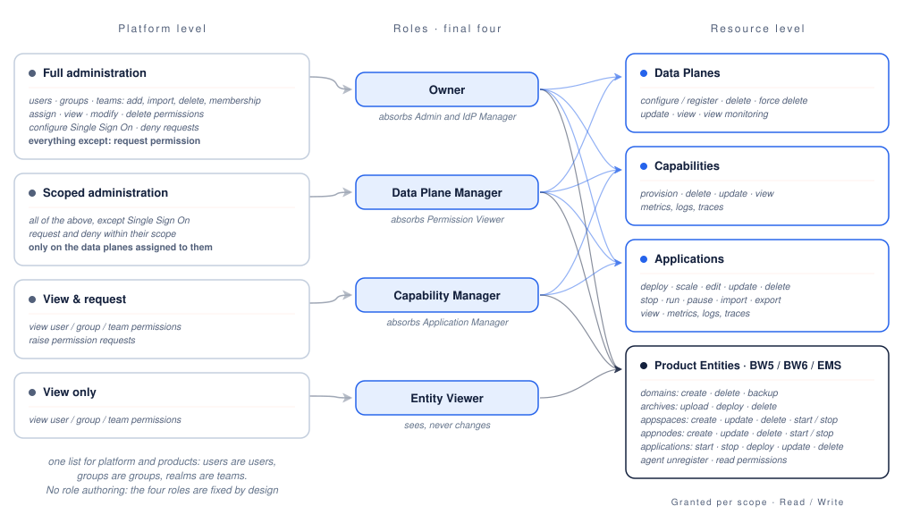
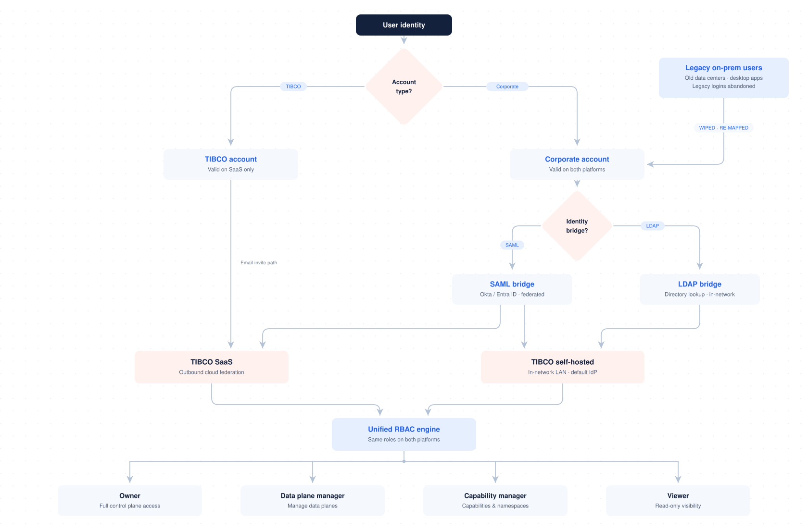
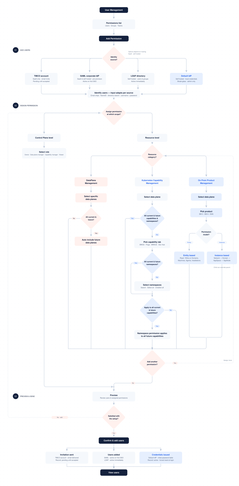

Overview
The short version, before the details.
Every TIBCO product used to manage its own users. Control Plane v1 brought identity into one place, but its permissions stopped at the data plane. Customers ended up running one data plane per team just to keep teams apart.
I studied how the older products handled access, catalogued every permission and tested the existing roles cell by cell. That led to four roles, with namespaces for Kubernetes and Read or Write per entity for on prem.
Teams can share one data plane through permissions instead of paying for a copy each, and BW5, BW6 and EMS now live in the same model as everything else.
- The legacy study of BW5, BW6 and Control Plane v1
- The permission catalogue and the QA visibility grid
- The card sort and the 8 to 4 role consolidation
- The containment model of where authority lives
- The namespace and BW6 access assignment flows
- The user invite flows across identity sources
- The key screens and the end to end prototype
Context & problem
Access control at TIBCO went through three generations. Each one fixed the flaw of the one before, and the newest one left a gap that was costing customers money.
The domain era
Local users, custom roles, per resource ACLs. Unbounded flexibility.
Every domain an islandThe platform era
Identity moved to SSO. A fixed, deliberately coarse vocabulary scoped to data planes.
Legible but too coarseThe containment era
Keep v1's readable roles and add the precision it was missing: namespaces for Kubernetes, entity level access on prem.
My workWhere v1 fell short
v1 stopped one level short of isolation. A missing permission level was forcing customers into an infrastructure workaround.
Teams sharing a data plane could see and modify each other's applications.
The only workaround was one data plane per team: 20 data planes for 20 teams.
Each data plane carries its own provisioning, monitoring and admin burden.
Extend the permission model below the data plane so multiple teams can safely share one data plane, and bring the on prem products into the same model, without making roles too broad or setup too detailed.
Constraints that shaped everything
The whole idea, in one picture
Control Plane owns the platform tasks: users, groups, teams, permissions, identity. Beneath it, two worlds carry the resource tasks. RBAC is simply their sum.


Research without direct users
The new model didn't exist yet, so there was nobody to interview and no analytics to read. I leaned on the system itself instead, in three steps.
Mapped which failure mode each generation reacted against, to test every proposal.
Every controllable action, from registering a data plane to configuring SSO.
Verified v1 behaviour cell by cell, role against role.
Step 1 · The legacy study
Before designing the destination, I studied the departure point: BW5 Administrator, the BW6 Admin UI and Control Plane v1, through documentation and direct use of live environments.
Classic BusinessWorks was administered per domain, each a self contained security realm with its own user store, roles and access control lists.


Unlimited flexibility makes a system that can express anything and that nobody can read. Answering "who can touch app X?" meant opening dialogs one by one.
The BW6 Admin UI introduced three fixed roles and an entity versus instance split, an idea the redesign later inherits. But the grant mechanics still leaked complexity.
| Role | Permission | What it allows |
|---|---|---|
| BW User | Read | View entities within granted scope |
| BW Operator | Lifecycle | Start and stop AppSpaces, AppNodes and applications |
| BW Administrator | Full control | Create, delete, deploy, update and back up across the hierarchy |
To see instance d1, you also had to grant the plural entity, domains.
Granting a child gave read on its parent, but a parent never flowed down.
Stopping an AppSpace stopped AppNodes the user could not even see.
A user who created an AppSpace could not view it without a new grant.
BW6 Enterprise Administrator screens


The platform replaced the domain centric world with a platform centric one. The deepest change: granularity moved from verbs to scopes.
| Dimension | Administrator 5.x | Control Plane v1 |
|---|---|---|
| Security boundary | Administration domain | Organization / subscription |
| Identity store | Local domain store or LDAP | TIBCO Accounts or corporate IdP (SAML SSO) |
| Authorization | Read / Write / Administer ACLs per resource | Fixed permissions scoped to data planes |
| Highest privilege | Super User, a bypass | Owner, a visible permission |

- One identity across every data plane, instead of accounts per domain
- A small set of named permissions everyone could talk about
- Effective access is the first thing you see
- Custom roles and per resource delegation
- Different rights on two sibling apps
- Anything below the data plane, including namespaces. This is the gap the rest of this case study is about.
Where v1's vocabulary came from: Kubernetes
| Kubernetes role | Grants | v1 counterpart |
|---|---|---|
| cluster admin | Unrestricted cluster wide access | Owner |
| admin | Full CRUD within a namespace | Data Plane Manager + Capability Manager |
| edit | Read/write, no RBAC changes | Application Manager |
| view | Read only | Application Viewer, View Permissions |
The irony: the Kubernetes roles v1 borrowed are namespace scoped by design. v1 raised the boundary to the data plane, and the level it dropped is exactly where team isolation lives.
Consolidated role inventory
A visibility staircase. Too wide, too coarse, several near duplicates.
A Super User above the model, and roles as saved bundles of checkboxes. Fine grained to a fault.
Named roles and an entity hierarchy, but still its own island.
A private store with permissions per destination, granted directly to users.
Step 2 · What the permission catalogue revealed
Authority was already two tiered. Control Plane permissions manage people; resource permissions manage infrastructure, and only the second can be scoped.
The exceptions hinted at a hierarchy. "Team Admin manages everyone except Owners and IdP Managers" is really a containment diagram written as a sentence.
One permission covers both worlds. Data Plane Manager is identical everywhere; below it Kubernetes uses roles and on prem uses a matrix.
Dependencies were a trap. Real people need combinations of permissions, so assigning them had to feel like one decision, not four.
Step 3 · Verifying v1 cell by cell
I went through the QA worksheet slowly, every role against every other. A tick means the row role can see the column role's permissions. Some rows turned out to be almost identical, and that made the case for fewer roles before anyone had to argue it in a meeting.
| Role sees → | O | A | Pv | IdP | DPM | Cap | App | EV |
|---|---|---|---|---|---|---|---|---|
| Owner | ✓ | ✓ | ✓ | ✓ | ✓ | ✓ | ✓ | ✓ |
| Admin | ✗ | ✓ | ✓ | ✓ | ✓ | ✓ | ✓ | ✓ |
| Permission Viewer | ✗ | ✗ | ✓ | ✗ | ✓ | ✓ | ✓ | ✓ |
| IdP Manager | ✗ | ✗ | ✓ | ✓ | ✓ | ✓ | ✓ | ✓ |
| Data Plane Manager | ✗ | ✗ | ✓ | ✗ | ✓ | ✓ | ✓ | ✓ |
| Capability Manager | ✗ | ✗ | ✓ | ✗ | ✗ | ✓ | ✓ | ✓ |
| Application Manager | ✗ | ✗ | ✓ | ✗ | ✗ | ✗ | ✓ | ✓ |
| Entity Viewer | ✗ | ✗ | ✓ | ✗ | ✗ | ✗ | ✗ | ✓ |
Owner, Admin and IdP Manager behaved alike at the top. Permission Viewer and Data Plane Manager had identical rows. Capability and Application Manager overlapped. Eight roles were really doing the work of four.
Shaping the model
Three things turned the research into a structure: a card sort in two rounds, a round of pushback, and a diagram of where authority lives.
Card sorting legacy tasks into the platform
I ran the sort in two rounds. Round 1, open sort: 5 internal participants grouped permission and access tasks into categories of their own. Seven clear groups emerged, and on prem and BW6 items consistently stood apart.

Round 2, mapping: with the groups understood, I turned 21 legacy tasks from BW5, BW6 and EMS into cards and placed each against the existing platform roles, with an open pile for anything that did not fit.
Where every legacy capability lands
21 legacy tasks from BW5 Administrator, BW6 Admin UI and EMS, sorted against the eight platform roles.
| Legacy task | Lands in | Status |
|---|---|---|
| BW5 Administrator · 10 cards | ||
| Add & remove domain users | Owner | Mapped |
| Audit: who can touch app X? | View Permissions | Mapped |
| Configure LDAP integration | IdP Manager | Mapped |
| Register a machine | Data Plane Manager | Mapped |
| Deploy an application (EAR) | Application Manager | Mapped |
| Start / stop an application | Application Manager | Mapped |
| View domain monitoring console | Application Viewer | Mapped |
| Read on app A, write on app B | Per app grants are finer than any single role | Needs decision |
| Reset a user's password | Handled by the IdP | Retired |
| Set password policy (XML) | Handled by the IdP | Retired |
| BW6 Admin UI · 8 cards | ||
| Assign roles to users | Owner | Mapped |
| Register a bwagent | Data Plane Manager | Mapped |
| Deploy an archive | Application Manager | Mapped |
| View deployed applications | Application Viewer | Mapped |
| Create an AppSpace | Container concept has no cloud equivalent yet | Needs decision |
| Start / stop an AppNode | Runtime level control, sits between two roles | Needs decision |
| Back up a domain | Platform operated in the new model; confirm | Needs decision |
| View only domain d1 | Scoping, not a role; needs a separate mechanism | Needs decision |
| EMS · 3 cards | ||
| Create a queue | Messaging objects are resources, not admin roles | Needs decision |
| Browse a topic | Read access to a resource instance, not a role | Needs decision |
| Sync users into EMS store | Handled by the IdP | Retired |
Six of the seven open cards weren't missing roles at all. They were about scope: one domain, app A versus app B, a queue, a topic. No role could hold them, which is why on prem access became a scoped grant next to the roles instead of another role.
| Open card | Product | Resolved as |
|---|---|---|
| Read on app A, write on app B | BW5 | Instance · R/W |
| View only domain d1 | BW6 | Instance · Read |
| Start / stop an AppNode | BW6 | Instance · Write |
| Create an AppSpace | BW6 | Entity · Write |
| Create a queue | EMS | Entity · Write |
| Browse a topic | EMS | Instance · Read |
| Back up a domain | BW6 | Platform operated |

The pushback: "Why not just two roles?"
My first proposal had six personas. The first reaction from stakeholders was that it was too complex: why not just Admin and User? It was a fair challenge, so instead of defending six, I tested both ends against how scoping actually works.
"Admin" bundles cluster deletion with app deploys. A team lead deploying their own app could also remove a cluster shared by three other teams.
Capability and Application Manager overlapped in practice, and the QA grid agreed. Six things to explain on day one, with no evidence it was worth it.
Owner, Data Plane Manager, Capability Manager, Entity Viewer. Scope does the fine grained work that extra roles would otherwise do.
Honestly, four came from reasoning with stakeholders, not from user testing. It's first on my list to validate.
The containment model
Before drawing any screens, I drew this. If you get access at any level, you see everything below it, never above and never sideways.
Midway through, a new requirement arrived: several teams per subscription, invisible to each other. The model absorbed it by adding one level, Team, and no new role. Teams not seeing each other came for free from the "never sideways" rule, so I didn't have to patch anything.
The solution
Four roles, each seeing its own level and everything below it. People request access from the level above, and grants come back down.
Owner
Runs people, permissions and identity. Never requests, because requests flow to them.
Data Plane Manager
The Owner's mirror, minus SSO, only on assigned data planes.
Capability Manager
Sets up capabilities and runs the apps on them. Raises permission requests.
Entity Viewer
Sees within scope, never changes anything.

Where the precision lives
Granted per data plane, capability, namespace or application. It covers everything below, never anything beside.
Product Permissions in BW5, BW6 and EMS: per entity type or named instance, as Read or Write.
"All current and future" at any level writes a grant once and keeps it true as the estate grows.
Two worlds, one simple way to give access
One customer had 20+ teams that needed to share one data plane without seeing each other's work. At the same time, BW6 had to join the platform. We designed both so an admin learns one screen and uses it everywhere.
Think of a data plane as an office building. Before, admins could only hand out a key to the whole building, so a team that wanted privacy had to rent a building of its own. We added keys for single floors (namespaces). Now many teams share one building, and each team only opens its own floor.
Give each team its own floor
Anyone allowed to manage apps on a shared data plane could see and change every team's apps. The only way to keep teams apart was a separate data plane per team, which is slow and expensive.
Add one more level, the team's own space, to the access screen admins already know. No new roles, nothing to relearn.
- You pick the place first, then the role, so only roles that make sense there show up.
- It's one checklist screen, so you can tick many spaces at once.
- Greyed out buttons say why you can't do something, instead of disappearing.
- Whole teams come in through company groups, not one person at a time.
Show access as a folder tree
BW6 organizes things like folders inside folders: domains hold AppSpaces, which hold AppNodes. Names repeat, so "AppSpace1" can mean several things, and "all AppSpaces" vs "this one AppSpace" is easy to mix up.
The access screen shows that same folder tree. At any level, the admin ticks Read (can view) or Write (can change).
- We listed every kind of access request and agreed what each meant before drawing a screen.
- Names always show their full path, like "D1 › AppSpace1".
- You can see the folders above yours so you know where you are, but you can't open them.
- There are no "everything except X" rules, so checking someone's access is simple addition.
A team gets Manager on its own space in a shared data plane. They can deploy and update their apps there, they can't see the team next door, and they still see the data plane's name so they know where they are. If they try something outside their rights, the button is already greyed out with the reason.
Inviting users
Two hosting models and four sign in methods, each with its own invite and activation. The sign in part varies a lot, but giving permissions doesn't vary at all. So the invite screen adapts to the source, and every path ends at the same "assign roles" step.

Key flows and decisions
Four everyday jobs an admin does, what each screen does in simple words, and the one design decision behind it.
Choose where, then what they can do
The admin first picks the place (a server, out of 100+, with search), then picks the role. Before saving, the screen reads the change back in plain words so nothing is granted by mistake.
One screen, two ways to look
Admins ask two questions: "what can this person do?" and "who can touch this server?". One switch flips the same screen between both. In the old product, the second question meant opening every item one by one.
You only see what's yours
Someone who manages one server sees a product that looks like it holds only that server. Other teams' servers are not greyed out; they are simply not there, so nobody even learns they exist.
Team leads manage their team, nothing more
A team lead can add people to their team and give them access within it. Company wide settings, like Single Sign On setup and subscription wide permissions, simply don't appear for them.

Impact & next steps
The model hasn't launched, so I don't have usage numbers, and I'd rather not invent any. Here's what has already changed.
Became a formal requirement
Namespace level access is now defined in a product requirements document, with this UX work as its design workstream.
Stakeholders agreed on four roles
The "why not just two roles?" pushback ended in a shared decision: four roles, with scope doing the fine grained work.
Audit trail added to scope
Stakeholder mapping surfaced the auditor's needs, and access change events became first class audit records.
Spot Award from Coforge
Recognised for the TIBCO project work.
What comes next
PlannedHere's how I plan to measure whether it worked.
- Data planes per account. The strongest signal: accounts should consolidate toward fewer, shared data planes.
- Support tickets tagged "access issue"
- Time to first successful grant
- Ratio of custom scope grants to role only grants
Task based usability sessions with 5 platform or team admins on the assignment flow.
- Does the four role model reduce friction, or does a Manager role do too many jobs?
- Is scope first easy to learn when most cloud consoles go role first?
Reflection
Studying two generations of shipped access control before designing the third changed how I worked. It wasn't background reading. Every proposal could be checked against two known failures: does this bring back the unreadable matrix, or the coarseness that multiplied data planes?
If I did it again, I'd push harder for even two or three conversations with platform admins before settling the role count. I believe the reasoning behind four, but belief isn't evidence.
What I'd keep: drawing where authority lives before drawing any screens. Almost every hard question in this project was answered by that diagram before it reached a design review.
Fewer roles × precise scopes.